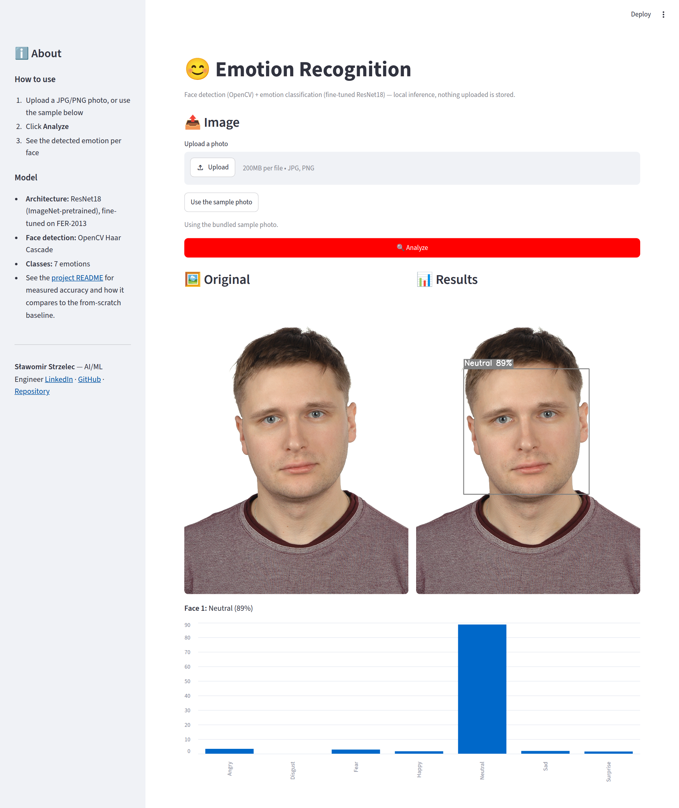
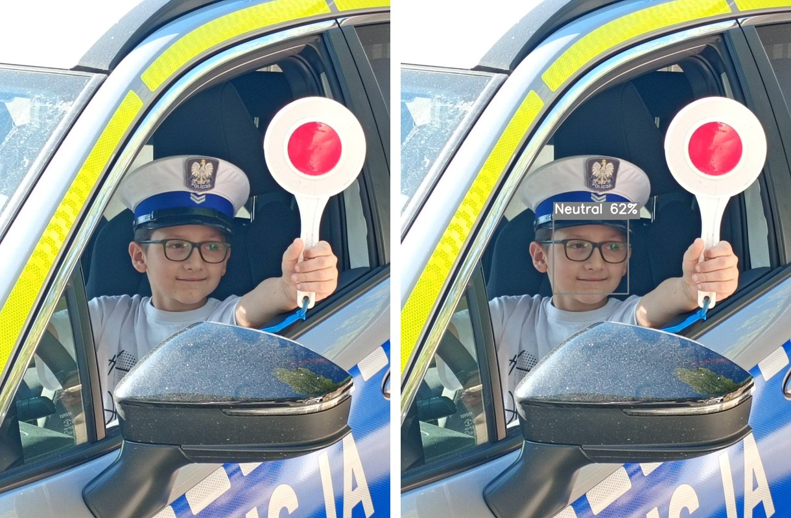
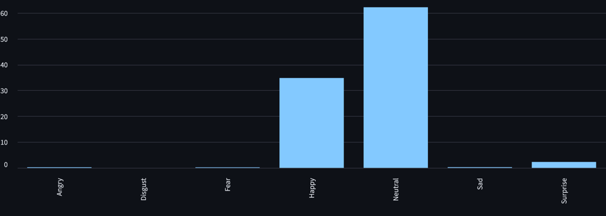

😊 Emotion Recognition
Face detection and facial emotion classification — a fine-tuned ResNet18 on FER-2013, with an honest comparison against a from-scratch CNN, deployed as a Streamlit app.
Live demo: emotion-recognition-cv.streamlit.app · GitHub Repository


Upload a photo or use the bundled sample — the app draws a box with the predicted emotion and shows the probability for each of the 7 classes.Why this project
The earlier version of this project was a small CNN trained from scratch that reached 59.64% test accuracy on FER-2013 — below the ~65% usually quoted as human level for this dataset. I rebuilt it from a written spec instead of tuning it in place: transfer learning as the main approach, the old architecture kept as an explicitly measured baseline, and every number in the README produced by evaluate.py rather than asserted.
What it does
Upload a photo (or use the sample). OpenCV's Haar Cascade finds faces, and each face is classified into one of 7 emotions (Angry, Disgust, Fear, Happy, Neutral, Sad, Surprise) with a per-class probability breakdown.
Example


A casual photo, outside the FER-2013 distribution. The model predicts Neutral (62%), with Happy (35%) as the second guess — a faint smile splits the probability between the two, which is typical for subtle expressions.
How it works
- Face detection: OpenCV Haar Cascade.
- Emotion classification: ResNet18 pretrained on ImageNet, fine-tuned on FER-2013 (35,888 grayscale 48×48 images) with augmentation, class-weighted loss and an LR schedule. Trained on a free Colab GPU.
- Evaluation: accuracy, per-class precision/recall/F1 and confusion matrix on the FER-2013 test split.
Measured results
| Model | Training pipeline | Test accuracy | Macro F1 |
|---|---|---|---|
| ResNet18 (used by the app) | augmentation + class weights + LR schedule | 67.96% | 0.66 |
| CNN from scratch | no augmentation, no class weights | 63.11% | 0.53 |
| CNN from scratch | augmentation, no class weights | 61.54% | — |
| CNN from scratch | augmentation + class weights + LR schedule | 51.70% | 0.45 |
| Old project's CNN (different pipeline) | — | 59.64% | — |
Transfer learning beats the best from-scratch CNN by about 4.9 points of accuracy and 13 points of macro F1. Happy and Surprise are recognized well; Fear is the weakest class (recall 0.44).
Related projects
- Cuneiform Sign Classifier — the same ResNet18 transfer-learning approach on a very different image domain.
- People Counter — modern object detection and tracking; this project keeps a classical Haar Cascade for the face-detection step and puts the effort into the classifier.
- Erythrocyte Shape Analyzer — classical image processing (thresholding, contours, ellipse fitting) instead of a learned model.
Limitations, stated plainly
- The 68–72% target I set in the spec was not reached — the ResNet ends at 67.96%.
- The first CNN run (51.70%) was underfit, which would have made the gap look like ~16 points. I re-ran the CNN under two lighter pipelines to get a fair baseline, and the table shows all runs.
- Checkpoint selection and early stopping used the test split (the dataset ships train/test only), so all accuracies are slightly optimistic.
- FER-2013 is a curated dataset; accuracy on casual, in-the-wild photos will likely be lower. The Haar Cascade also misses faces at extreme angles or with occlusion.
- Disgust has only 111 test images, so its per-class numbers are statistically weak.
Data security & privacy
All inference runs locally — an uploaded photo is never sent to a third-party API, processed in memory only, and not logged or stored. Upload size and type are validated.
Tech stack
Python · PyTorch · torchvision (ResNet18) · OpenCV · Streamlit · scikit-learn · GitHub Actions
License
MIT